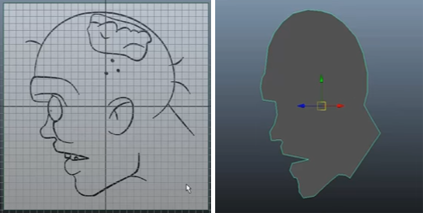
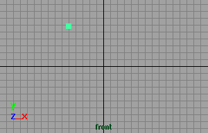
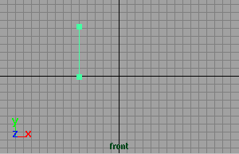
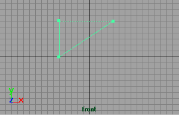
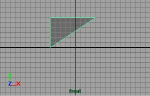

您可以使用顶点开始绘制多边形网格，而不是从基本体形状开始。如果具有要跟踪的特定 2D 形状，这将非常有用。

创建新多边形
- 选择
- 单击可放置第一个顶点。
除非您将顶点们捕捉到现有几何体，否则 Maya 会将其放置在地平面上。

- 单击可放置下一个顶点。Maya 将在放置的第一个点和最后一个点之间创建一条边。

- 放置另一个顶点。一条虚线边将连接三个顶点。
重要： 顶点的放置方式决定面法线的方向。如果以顺时针方向放置顶点，则面法线指向下方。如果以逆时针方向放置顶点，则面法线指向上方。

- 请执行下列任一操作：
- 按 Enter 键以完成多边形创建。
- 按 Delete 键以删除放置的最后一个点。
- 按 Y 键开始创建新多边形。
- 继续放置顶点以创建四边形或 n 边多边形。
- 若要切换以编辑顶点，请按 Home 键或 Insert 键。将有一个操纵器显示在上一个顶点上。使用该操纵器来移动顶点，按 Delete 键删除一个分段，或单击另一个顶点来进行编辑。再次按 Home 键或 Insert 键以完成操作。
